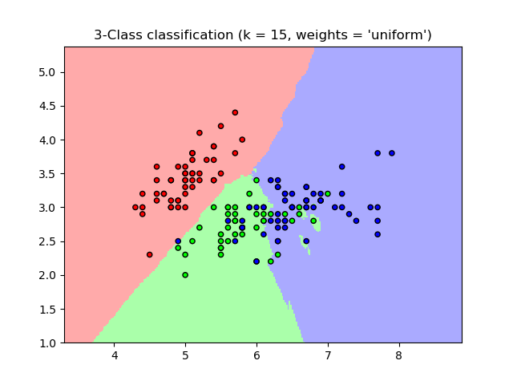
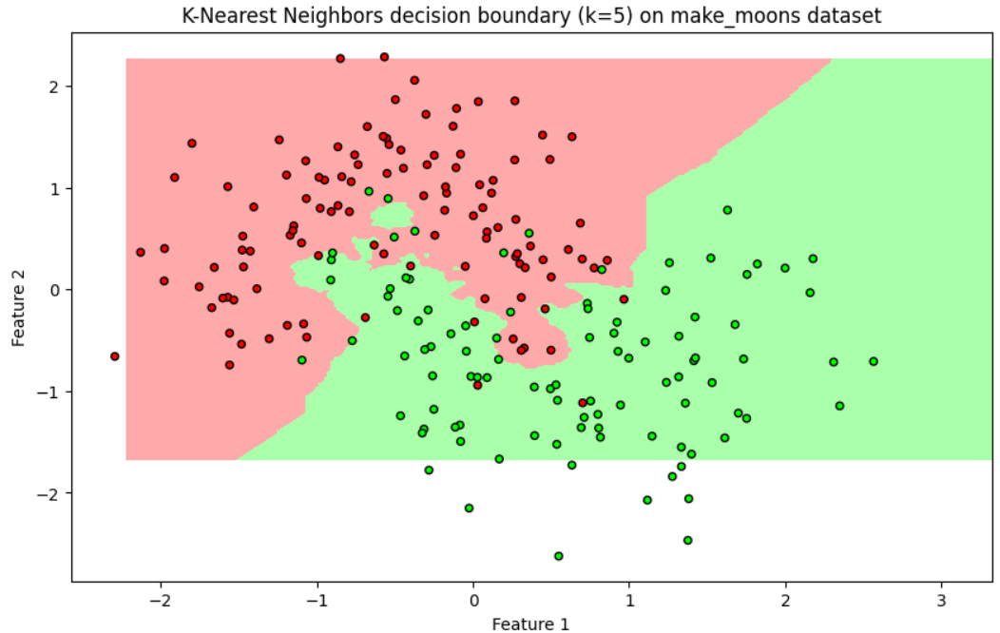

K-Nearest Neighbors (KNN)
Introduction to K-Nearest Neighbors
K-Nearest Neighbors (KNN) is a simple yet effective supervised machine learning algorithm used for both classification and regression tasks. It operates based on the principle that similar data points are likely to belong to the same class or have similar values.
Basic Concept of KNN
- Instance-Based Learning: KNN is a type of instance-based learning, where the model does not learn a discriminative function from the training data but rather memorizes the training dataset.
- Distance Metrics: KNN relies on calculating the distance between points in the feature space. Common metrics include Euclidean distance, Manhattan distance, and Minkowski distance.
- K Parameter: The 'K' in KNN represents the number of nearest neighbors to consider when classifying a new data point.
- Voting Mechanism: In classification, KNN uses the majority vote of the K-nearest neighbors to determine the class of the new point.
- Regression: For regression tasks, KNN predicts the average of the K-nearest neighbors' target values.
Working Mechanism of KNN
1.Data Preparation
- Collect the dataset that you want to use for training. This dataset should contain labeled examples, meaning each data point has both features (input variables) and a label (output).
- Each data point is represented as a feature vector in a multi-dimensional space. The number of dimensions corresponds to the number of features.
2.Choose the Number of Neighbors (K)
- K is a crucial hyperparameter that determines the number of nearest neighbors to consider when making a classification or prediction.
- The value of K should be chosen carefully. A small K might lead to noise affecting the results (overfitting), while a large K could smooth out the data too much (underfitting). Common practice is to try different values of K and use cross-validation to find the optimal one.
3.Calculate Distance
- For each new data point (the one you want to classify), calculate the distance between this point and all the points in the training set.
- Distance Metrics: Common distance metrics include:
- Euclidean Distance: Most commonly used, calculated as the straight-line distance between two points in space.
- Manhattan Distance: Distance measured along axes at right angles.
- Minkowski Distance: A generalized distance metric that includes both Euclidean and Manhattan distances.
- Hamming Distance: Used for categorical variables.
4.Find the K Nearest Neighbors
- Once the distances are calculated, sort all the training points in increasing order of distance from the query point.
- Select the top K points that are closest to the query point. These are the K-nearest neighbors.
5.Vote for Classification (in case of classification task)
- Each of the K-nearest neighbors “votes” for their class, i.e., the label associated with each neighbor.
- The class that receives the most votes among the K neighbors is assigned as the class of the query point.
- Weighted KNN: In some cases, the voting can be weighted based on the distance, meaning nearer neighbors have a greater influence than those farther away.
6.Average for Regression (in case of regression task)
If KNN is being used for regression, the average (or sometimes weighted average) of the values of the K nearest neighbors is taken as the prediction for the new data point.
7.Assign the Class/Value to the Query Point
Based on the majority voting (in classification) or average calculation (in regression), the query point is assigned the corresponding label or value.
Important Considerations in KNN
Choosing the right value of K is a crucial aspect of the KNN algorithm. A small value of K can make the model highly sensitive to noise in the data, leading to overfitting, whereas a large K value can cause the model to underfit by oversmoothing the decision boundary. It's common practice to select an odd value for K to prevent ties in classification problems. Feature scaling is another critical consideration for KNN, as the algorithm relies on distance calculations to identify neighbors. Without proper scaling, features with larger ranges can dominate the distance metric, leading to biased results. Therefore, normalization or standardization of features is essential to ensure all features contribute equally.
KNN can also be computationally expensive because it requires calculating the distance of the query point from every point in the training set. This means that storing and searching through large datasets for each prediction can be time-consuming and slow, especially as the dataset grows. Another challenge with KNN is related to dimensionality. The performance of KNN can degrade with high-dimensional data due to the "curse of dimensionality," where the volume of the space increases exponentially, making data points sparse and reducing the effectiveness of the nearest neighbors' search.
Handling missing data in KNN can be done by imputing missing values using the values of the nearest neighbors, which provides a way to fill in gaps in the data. Unlike many other machine learning algorithms, KNN does not have a training phase, as it is a type of lazy learning. This means that all computations are deferred until the classification phase, and all training data must be retained to make predictions for new data points.
Advantages of KNN
- Simple and easy to understand: KNN is a straightforward algorithm with no complex mathematical models.
- No training phase: KNN is a lazy learner, meaning it doesn't require a training phase to build a model.
- Versatile: KNN can be used for both classification and regression tasks.
- Can handle non-linear relationships: KNN can capture non-linear relationships in the data.
Disadvantages of KNN
- Computationally expensive: KNN can be slow for large datasets, especially when calculating distances for all training points.
- Sensitive to the choice of distance metric: The choice of distance metric can significantly impact the performance of KNN.
- Sensitive to the curse of dimensionality: As the number of dimensions increases, the distance between points becomes less meaningful, making KNN less effective.
- Requires labeled data: KNN is a supervised algorithm and requires labeled data for training.
Sample Code Example
KNN in Action: Classifying Iris Species Using scikit-learn:
# Import required libraries
import numpy as np
import matplotlib.pyplot as plt
from sklearn.datasets import make_moons
from sklearn.model_selection import train_test_split
from sklearn.preprocessing import StandardScaler
from sklearn.neighbors import KNeighborsClassifier
from matplotlib.colors import ListedColormap
# Generate a synthetic dataset
X, y = make_moons(n_samples=300, noise=0.3, random_state=42)
# Split the data into training and test sets
X_train, X_test, y_train, y_test = train_test_split(X, y, test_size=0.3, random_state=42)
# Standardize the data
scaler = StandardScaler()
X_train = scaler.fit_transform(X_train)
X_test = scaler.transform(X_test)
# Create a KNN classifier
knn = KNeighborsClassifier(n_neighbors=5)
knn.fit(X_train, y_train)
# Evaluate the model
accuracy = knn.score(X_test, y_test)
print(f"Model accuracy: {accuracy * 100:.2f}%")
# Create a mesh grid for plotting decision boundaries
x_min, x_max = X[:, 0].min() - 0.5, X[:, 0].max() + 0.5
y_min, y_max = X[:, 1].min() - 0.5, X[:, 1].max() + 0.5
xx, yy = np.meshgrid(np.arange(x_min, x_max, 0.02),
np.arange(y_min, y_max, 0.02))
# Predict classifications for each point in the mesh grid
Z = knn.predict(np.c_[xx.ravel(), yy.ravel()])
Z = Z.reshape(xx.shape)
# Plot decision boundaries and scatter plot
plt.figure(figsize=(10, 6))
cmap_light = ListedColormap(['#FFAAAA', '#AAFFAA'])
cmap_bold = ListedColormap(['#FF0000', '#00FF00'])
# Plot the decision boundary by assigning a color to each point in the mesh
plt.contourf(xx, yy, Z, cmap=cmap_light)
# Plot the training points
plt.scatter(X_train[:, 0], X_train[:, 1], c=y_train, cmap=cmap_bold, edgecolor='k', s=20)
plt.title('K-Nearest Neighbors decision boundary (k=5) on make_moons dataset')
plt.xlabel('Feature 1')
plt.ylabel('Feature 2')
# Show the plot
plt.show()
Output:
